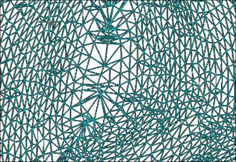
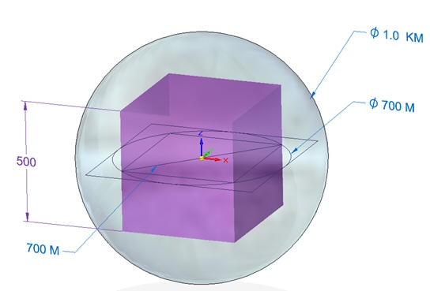

Creating a terrain model using Virtual Components
Overview
Digital Terrain Models (DTM) are useful for understanding how buildings and equipment need to be positioned on a building site. Building a solid model of the terrain using surveying data is beneficial in calculating where earth has to be added or removed to position new construction components.
Surface elevations are typically stored as a Triangulated Irregular Network (TIN), which is a digital data structure used in a Geographic Information System (GIS) for the representation of a surface. A TIN is a vector-based representation of the physical land surface or sea bottom, made up of irregularly distributed nodes and lines with three-dimensional coordinates (X, Y, and Z), which are arranged in a network of triangles that do not overlap. TINs are often derived from the elevation data of a rasterized Digital Elevation Model (DEM).

TIN data must be converted into .stl (STereoLithography) format in order to be imported into a Solid Edge part file. The STL data is imported as a design body consisting of faceted data.
Limitations
Even though the faceted triangles can cover large areas, many miles or kilometers in distance, and have very large coordinate values, there is a limit to the size that a solid body can be within Solid Edge. The limit is approximately the volume contained within a one kilometer diameter sphere. Because of this limitation, it is necessary to create a solid representation of a terrain model by placing the faceted data (part document) into an assembly. Once in the assembly, the Virtual Component Structure Editor is used to create the part documents containing the solid body representing the digital terrain model. Assembly sketches used to define the boundaries of the terrain model must be small enough to fit within a 700 meter diameter circle. Once published, each sketch defines a subassembly containing the solid body representing the surface. Adjacent subassemblies can be created if a larger area is needed.

For more information on the virtual component editor, see the help topic Creating and publishing Virtual Components.
Units
Part and assembly documents should have units compatible with the source data. For example, use Km for the length readout if DTM (digital terrain model) values are measured in kilometers, and km^2 if the area measurements are in square kilometers.